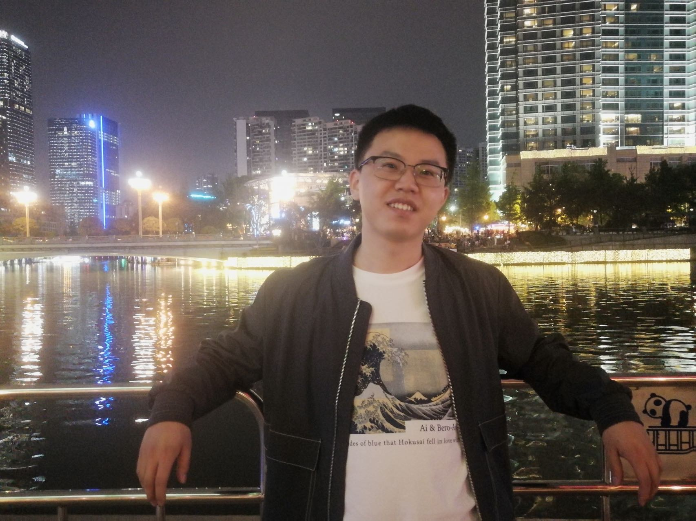

|
Zhiwei Hu (胡志伟)
Ph.D. Student
School of Computer and Information Technology
Shanxi University
Email: zhiweihu@whu.edu.cn
[Google Scholar]
[GitHub]
|

|
About Me
I am now a fifth-year PhD student (2020-) in Computer Science at Shanxi University, supervised by Prof. Ru Li, Prof. Jeff Z. Pan and Prof. Víctor Gutiérrez Basulto.
My research interests focus on representation learning for knowledge graph, including graph representation learning, multi-hop logical reasoning, also I am interested in knowledge distillation in LLMs.
Preprints
-
COTET: Cross-view Optimal Transport for Knowledge Graph Entity Typing
Zhiwei Hu, Víctor Gutiérrez-Basulto, Zhiliang Xiang, Ru Li, Jeff Z. Pan
[arXiv]
-
Leveraging Intra-modal and Inter-modal Interaction for Multi-Modal Entity Alignment
Zhiwei Hu, Víctor Gutiérrez-Basulto, Zhiliang Xiang, Ru Li, Jeff Z. Pan
[arXiv]
-
HYPERMONO: A Monotonicity-aware Approach to Hyper-Relational Knowledge Representation
Zhiwei Hu, Víctor Gutiérrez-Basulto, Zhiliang Xiang, Ru Li, Jeff Z. Pan
[arXiv]
Publications
-
Multi-level Matching Network for Multimodal Entity Linking
Zhiwei Hu, Víctor Gutiérrez-Basulto, Ru Li, Jeff Z. Pan
KDD 2025
[Paper][Code]
-
Multi-view Contrastive Learning for Entity Typing over Knowledge Graphs
Zhiwei Hu, Víctor Gutiérrez-Basulto, Zhiliang Xiang, Ru Li, Jeff Z. Pan
EMNLP 2023
[Paper][Code]
-
HyperFormer: Enhancing Entity and Relation Interaction for Hyper-Relational Knowledge Graph Completion
Zhiwei Hu, Víctor Gutiérrez-Basulto, Zhiliang Xiang, Ru Li, Jeff Z. Pan
CIKM 2023
[Paper][Code]
-
Transformer-based Entity Typing in Knowledge Graphs
Zhiwei Hu, Víctor Gutiérrez-Basulto, Zhiliang Xiang, Ru Li, Jeff Z. Pan
EMNLP 2022
[Paper][Code]
-
Type-aware Embeddings for Multi-Hop Reasoning over Knowledge Graphs
Zhiwei Hu, Víctor Gutiérrez-Basulto, Zhiliang Xiang, Xiaoli Li, Ru Li, Jeff Z. Pan
IJCAI 2022
[Paper][Code]